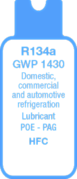
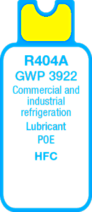
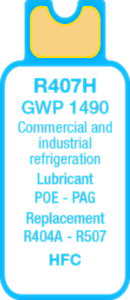
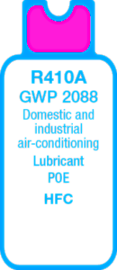
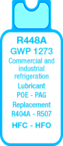
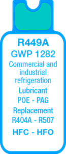

Since 2015 Vladmark Trade S.R.O. has been specialized in the delivery of refrigerant gases.
The goods are supplied directly form the manufacturer, no third-party resellers are involved.
All our products fully comply with the EU regulations.
|  |  |  |  |  |  |
| Freon R-134a, an alkyl halide, has been developed as a CFC substitute. It is used as a cooling fluid in the compression refrigeration cycles. It is considered as a low environmental impact refrigerant (HFC family). | From 2020 R404A will be banned from use in commercial refrigeration. Today there are substitutes such as R448A, R449A, R452A, R407H. | Mixture composed by R32, R125 and R134a gases, R407H refrigerant is considered as a possible alternative to the R22 gas, in fact it has similar efficiency and performances, even though it is not ozone resistant and has a GWP lower than R404A gas. | It is slowly disappearing to give way to R32 gas – as it has a GWP of 675, lower than R410A gas – although the two gases are not replaceable, because the R32 gas is flammable and requires a different system. | The R448A refrigerant is obtained by HFC and HFO mixture (in specific the gases R32, R125, R134a, R1234yf, R1234ze). It is a substitute of the R404A and R507 gases, and is used in industrial and commercial refrigeration. | Created as a substitute of the R404A and R507 gases, R449A refrigerant is a HFO and HFC mixture. Low and medium temperature commercial and industrial applications. |